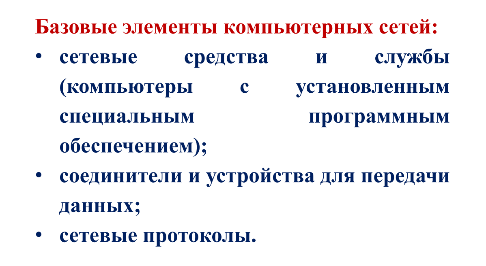
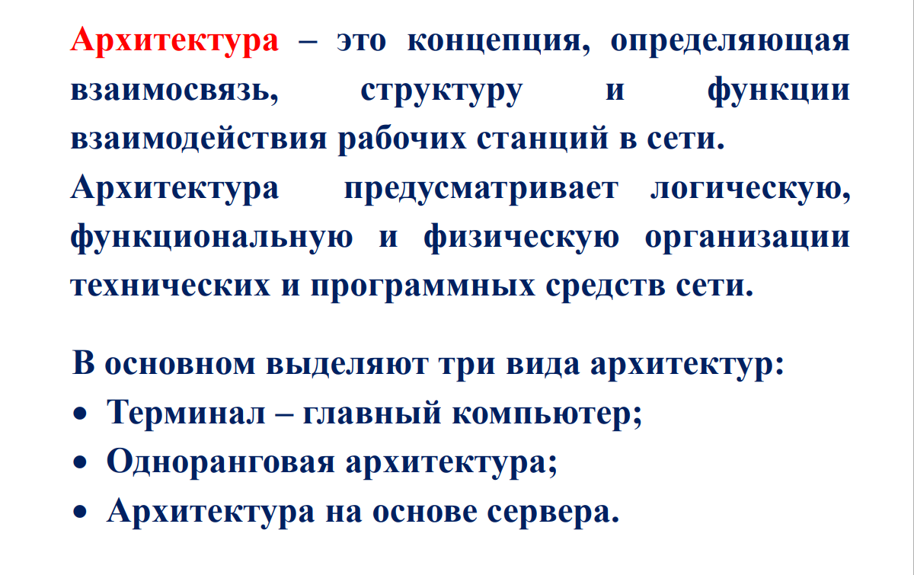
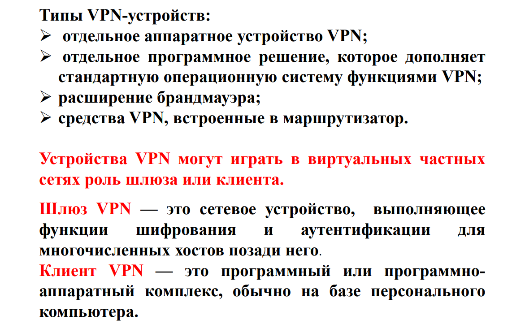
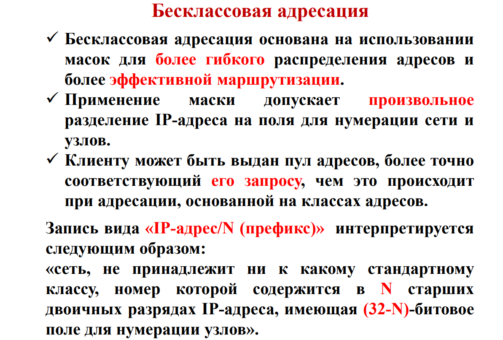

Какие бывают компьютерные сети?Что такое компьютерная сеть?Базовые эелементы компьютерных сетей

Техническое обеспечение вычислительных сетейЧто такое архитектура? Виды архитектур.

Что такое LAN?Основные характеристики ЛВСВиды физической среды передачи данных в ЛВСОсновные технологии передачи данных
Что такое топология?Виды топологии
Что такое Ethernet?Формат кадра в EthernetТипы Ethernet
Что такое VLAN?
Что такое WAN?Что такое первичные сети?Что такое сеть связи первичная?Основные технологии передачи данных
Что такое VPN?В чём заключается технология VPN? Какие основные свойства VPN сетей?Типы VPN устройств

Что такое туннелирование VPN?
Что такое Token Ring?Основные характеристики технологии Token Ring?Форматы кадров в Token Ring?
Что такое MPLS?Для чего используются метки?Как происходит метод доставки пакетов в MPLS?
Что такое поисковая система? В чём её назначение?Основные поисковые алгоритмы
Что такое Браузер?Какие основные функции Браузера?Какие конкурентные параметры Браузера?
Типы адресации в стеке протоколов TCP/IP?
Локальные (аппаратные) типы адресации
Сетевые IP-адреса?Способы определения номера сети и номера узлаКлассы IP адресовЗарезервированные адресаЧто такое маска? ПримерыБесклассовая адресация

Что такое DNS?Что такое родовой домен?Что такое домен страны? Инверсный домен?Что такое полное, краткое, относительное доменное имя?Распределение доменных имёнСхемы разрешения DNS имёнЧто такое корневые серверы DNS?
Что такое протокол DHСP?Основные термины службы DHСPРежим динамического распределения адресов?
Что такое шлюз?Что такое шлюз по умолчанию?Как узнать основной шлюз для локальной сети?
Что такое протокол ICMP?Назначение протокол ICMPОсновные команды протокола ICMP
Общие принципы организации сетевых служб
Что такое электронная почта? Н акакой архитектуре она построена и какие есть службы эл. почты?Что такое почтовый клиент? Какие функции выполняет почтовый сервер?
Как происходит?
Как происходит?
Что такое стандарт MIME? Зачем он?Назначение и функциональность стандарта MIME, а также особенности стандартаВ чём заключается работа MIME?
Что такое модель OSI?Модель OSIСтандартная модель взаимодействия открытых систем
Сетевые протоколы прикладного уровня модели OSI.
Стек протоколов TCP/IP. Назначение.
UDPTCP
Уровень сетевых интерфейсов модели TCP/IP?
Типы адресации в стеке протоколов TCP/IP?Локальные (аппаратные) типы адресацииСетевые IP-адреса?